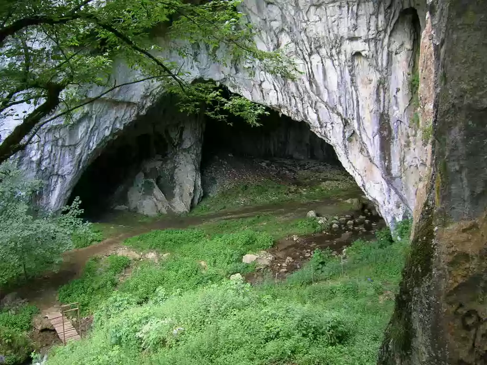

SRBIJA
Stopića pećina se nalazi na severoistočnoj strani Zlatibora. Udaljena je 30 km od Užica, 250 km od Beograda i 19 km od magistralnog pravca Beograd
– Podgorica. Put Užice – Sirogojno ide iznad same pećine.

Stopića pećina je rečna pećina, pošto kroz nju protiče Trnavski potok. Sastoji se od tri speleološka i hidrološka horizonta: periodično poplavljenog,
rečnog horizonta i najmlađeg horizonta, pukotine. Bez najmlađeg horizonta Stopića pećina je duga 1691,5 m, pokriva površinu od 7911,5 m2 i ima
zapreminu od preko 120.000 m2. Ulaz u pećinu se nalazi na 711 m nadmorske visine. Krečnjački sloj u pećini datira iz perioda triasa i debeo je preko
100 m. Ulaz u pećinu je impresivan, visok je 30-40 m, a širok 18 m. Klima u pećini je pod uticajem spoljašnje klime, zimi je hladno, a leti toplo.
Voda Trnavskog potoka takođe doprinosi mikroklimi pećine.
Pećina se sastoji od pet celina: „Svetla dvorana“, „Tamna dvorana“, „Velika sala sa kadama“, „Kanal sa kadama“ i „Rečni kanal“. Turistički deo pećine
nije bogat pećinskim ukrasima, ali ima nekoliko atraktivnih elemenata, kao što su: prostrani ulaz, dugure -otvori na tavanici, siparska kupa „Pseće
groblje“, vodopad „Izvor života“ i, pre svih, niz bigrenih kada koje se ubrajaju u najveće i najdublje (preko 7 metara) od svih pećina u Srbiji. Kade
su periodično poplavljene, a neke od njih su postale jezera.